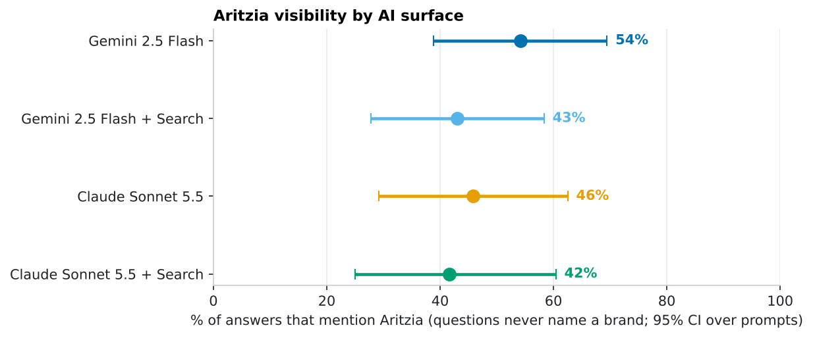
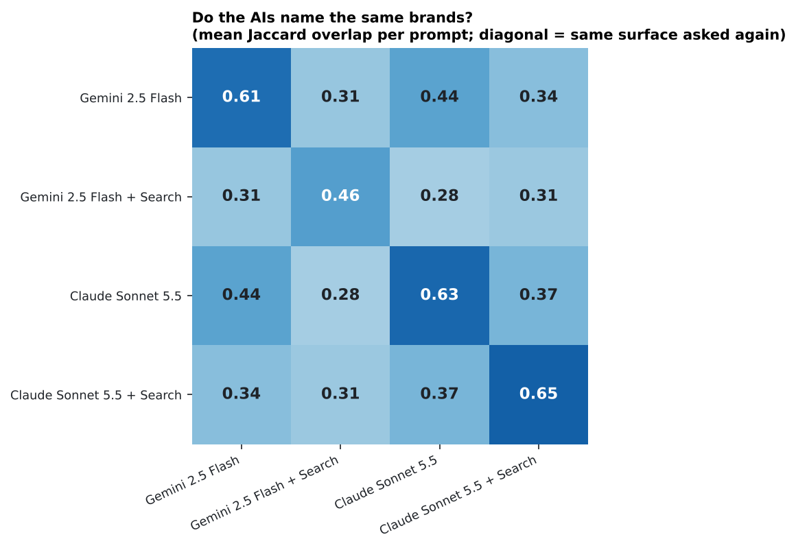

Does AI recommend Aritzia? Measuring brand visibility in Gemini and Claude
When a shopper asks an AI assistant where to buy a blazer, which brands does it name, in what order, and would it say the same thing twice? I asked 40 shopper questions on four AI surfaces (Gemini 2.5 Flash and Claude Sonnet 5.5, each with and without web search), extracted every brand mentioned, and measured visibility with confidence intervals and statistical tests. Aritzia is the focus brand; 93 brands are tracked.
Independent study; not affiliated with Aritzia or any brand mentioned. Results describe what these models said on 2026-11-05, not the brands' products.
TL;DR. With no brand named, Aritzia is mentioned in 42%–54% of shopping answers on every surface (ranked 3rd–5th of 93 brands). I can't separate the surfaces from each other or Aritzia from its closest competitors (all paired p ≥ 0.22; with 24 prompts each comparison only detects gaps of about 22%–32%). What is clear: web search makes answers more selective on both providers; different AIs name noticeably different brands for the same question, less overlap than one AI repeating itself; and Gemini's and Claude's search tools lean on very different sources, with Reddit appearing in 66 of 120 Gemini search answers and in none of Claude's 80. Because repeating the same question changes the brand list so much, single-shot "AI visibility scores" can mislead.
1 · Study design
Every prompt is something a shopper might type. Only the unbranded prompts measure visibility, because a brand named in the question naturally appears in the answer.
| Prompt type | Prompts | Example | Used for |
|---|---|---|---|
| Unbranded ("discovery") | 24 | "Where can I buy stylish women's workwear that isn't boring?" | Visibility, share of voice, rank |
| Alternatives | 6 | "What are good alternatives to Aritzia?" | Which competitors are named |
| Head-to-head | 6 | "Aritzia vs Reformation: which is better for dresses?" | Positioning, sentiment |
| About the brand | 4 | "Is Aritzia worth the price?" | Sentiment |
| Surface | Model | Web search | Repeats per prompt | Answers |
|---|---|---|---|---|
| Gemini 2.5 Flash | gemini-2.5-flash | no | 3 | 120 |
| Gemini 2.5 Flash + Search | gemini-2.5-flash | yes | 3 | 120 |
| Claude Sonnet 5.5 | claude-sonnet-5-5 | no | 3 | 120 |
| Claude Sonnet 5.5 + Search | claude-sonnet-5-5 | yes | 2 | 80 |
All 440 answers were collected on the same day at temperature 1.0 (Claude's search surface got 2 repeats per prompt instead of 3 to control cost: a search answer costs about 15 times a plain one because the retrieved pages count as input). Brands were extracted two independent ways (exact-name dictionary and an LLM reader) and audited against each other (section 8). A first collection of the Gemini surfaces two days earlier is used to look for drift (section 6).
Statistics note: answers to the same prompt are far more alike than answers to different prompts, so every interval resamples prompts, not answers. Treating all answers as independent would make the intervals look too tight.
2 · How visible is Aritzia?

| Brand (mentioned in % of unbranded answers) | Gemini 2.5 Flash | Gemini 2.5 Flash + Search | Claude Sonnet 5.5 | Claude Sonnet 5.5 + Search |
|---|---|---|---|---|
| Uniqlo | 40% | 53% | 58% | 65% |
| Everlane | 57% | 47% | 60% | 50% |
| Aritzia | 54% | 43% | 46% | 42% |
| H&M | 65% | 19% | 54% | 38% |
| Quince | 31% | 43% | 43% | 52% |
| Zara | 49% | 24% | 47% | 35% |
| J.Crew | 40% | 31% | 38% | 35% |
| Reformation | 32% | 29% | 46% | 35% |
| COS | 47% | 28% | 25% | 35% |
| Madewell | 35% | 17% | 46% | 29% |
| Nordstrom | 47% | 42% | 18% | 19% |
| Lululemon | 35% | 10% | 35% | 33% |
| Aritzia's rank | 3rd | 3rd | 5th | 4th |

The intervals overlap broadly everywhere: each surface's range for Aritzia is roughly 25% to 69%. Comparing Aritzia with each of the ten most-mentioned competitors on the same prompts (paired, Holm-corrected for multiple comparisons) finds no significant difference on any surface:
| Surface | Closest competitor to a significant difference (Aritzia minus competitor) | Holm-adjusted p |
|---|---|---|
| Gemini 2.5 Flash | Reformation (+22 pp) | 0.46 |
| Gemini 2.5 Flash + Search | Banana Republic (+19 pp) | 0.70 |
| Claude Sonnet 5.5 | Everlane (-14 pp) | 1.00 |
| Claude Sonnet 5.5 + Search | Uniqlo (-23 pp) | 1.00 |
It depends on the topic

For a brand team the actionable view is the gaps by topic, not the single average: some questions bring Aritzia up almost every time on every surface, and others never do.
3 · Do the AIs agree with each other?

Different surfaces share 0.28–0.44 of their brands on the same question, while one surface asked twice shares 0.46–0.65. The most similar pair is Gemini and Claude without search (0.44); Gemini with search is the most different from the others (0.28–0.31). At the level of the whole brand universe the AIs agree more: the rank correlation of brand mention rates is 0.57–0.72. They broadly agree on which brands are popular, but not on which ones to name for a particular question.
On Aritzia's own visibility, Claude minus Gemini is -8 pp without search and -1 pp with search, neither distinguishable from zero:
| Comparison (paired by prompt) | Metric | Difference | 95% CI over prompts | p (sign-flip) | Smallest detectable (80% power) |
|---|---|---|---|---|---|
| Anthropic: with search minus without | Aritzia mention rate | -4 pp | [-26, +17] pp | 0.763 | +32 pp |
| Anthropic: with search minus without | Tracked brands named per answer | -3.7 | [-5.1, -2.3] | < 0.001 | 2.0 |
| Gemini: with search minus without | Aritzia mention rate | -11 pp | [-26, +3] pp | 0.223 | +22 pp |
| Gemini: with search minus without | Tracked brands named per answer | -3.0 | [-4.5, -1.6] | < 0.001 | 2.1 |
| Claude minus Gemini, no search | Aritzia mention rate | -8 pp | [-26, +10] pp | 0.482 | +27 pp |
| Claude minus Gemini, no search | Tracked brands named per answer | +1.6 | [-0.3, +3.4] | 0.113 | 2.7 |
| Claude minus Gemini, with search | Aritzia mention rate | -1 pp | [-19, +17] pp | 0.943 | +27 pp |
| Claude minus Gemini, with search | Tracked brands named per answer | +0.9 | [-0.8, +2.7] | 0.318 | 2.5 |
4 · Does adding search change the answer?
Yes for breadth, inconclusive for Aritzia. On both providers, web search makes answers more selective: 3.0 fewer tracked brands per answer for Gemini (p = 0.0003) and 3.7 fewer for Claude (p < 0.001). The effect on Aritzia's mention rate is -11 pp for Gemini and -4 pp for Claude, both within noise: with 24 prompts this comparison can only detect differences of about 22%–32% (80% power). That is a statement about my design's power, not evidence of "no effect".
5 · Would the AI say the same thing twice?
| Prompt type | Gemini 2.5 Flash | Gemini 2.5 Flash + Search | Claude Sonnet 5.5 | Claude Sonnet 5.5 + Search |
|---|---|---|---|---|
| No brand named | 0.61 | 0.46 | 0.63 | 0.65 |
| Alternatives to Aritzia | 0.57 | 0.71 | 0.66 | 0.68 |
| About Aritzia | 0.74 | 0.54 | 0.64 | 0.56 |
| Aritzia vs competitor | 0.91 | 0.96 | 1.00 | 0.90 |

For unbranded questions, two answers to the same prompt share only 46%–65% of their brands. Gemini with search is the least consistent (0.46); Claude with search is the most (0.65). Whether a prompt brings up Aritzia is also unreliable: 17%–46% of prompts mention Aritzia in some repeats but not others (Claude's search surface, with only 2 repeats, has fewer chances to show this).
| Surface | Prompts that always mention Aritzia | Never | Only sometimes | Between-prompt share of variance (ICC) | Prompts needed for ±5 pp (3 repeats) |
|---|---|---|---|---|---|
| Gemini 2.5 Flash | 8 | 5 | 11 | 0.40 | 62 |
| Gemini 2.5 Flash + Search | 6 | 9 | 9 | 0.50 | 68 |
| Claude Sonnet 5.5 | 7 | 9 | 8 | 0.57 | 73 |
| Claude Sonnet 5.5 + Search | 8 | 12 | 4 | 0.67 | 79 |
The ICC is the share of variance in "did the answer mention Aritzia?" that lies between prompts rather than between repeats of one prompt. Prompt-to-prompt differences set a floor that repeating cannot remove:

Design rule: to estimate a mention rate to ±5 percentage points (one SE) you need about 62–79 prompts with 3 repeats each, depending on the surface. This is the same power logic as an A/B test, applied to prompt design, and it is why the intervals above are as wide as they are.
6 · Is there drift between days?
The two Gemini surfaces were also collected two days earlier with the same prompts. If the model's behaviour shifted, answers from different days should overlap less than repeats on the same day:
| Surface | Aritzia mention rate, day 1 → day 2 | Change | p | Brand-list overlap within day 1 / day 2 | Across the two days |
|---|---|---|---|---|---|
| Gemini 2.5 Flash | 57% → 54% | -3 pp [-17, +11] pp | 0.84 | 0.60 / 0.61 | 0.59 |
| Gemini 2.5 Flash + Search | 46% → 43% | -3 pp [-12, +7] pp | 0.77 | 0.48 / 0.46 | 0.44 |
The change in Aritzia's mention rate is small and not significant, and brand lists from different days overlap about as much as repeats from the same day. Two days is a short window, so this says the measurement is stable at that scale, not that models never change. The weekly workflow is built to extend this.
7 · What do the answers say about Aritzia?
Sentiment and "recommended" flags come from the LLM reader judging how the answer portrays the brand (not my opinion of the brand):
| Prompt type | Surface | Answers mentioning Aritzia | Positive / neutral / mixed / negative | Recommended |
|---|---|---|---|---|
| No brand named | Gemini 2.5 Flash | 39 | 39 / 0 / 0 / 0 | 97% |
| No brand named | Gemini 2.5 Flash + Search | 32 | 29 / 3 / 0 / 0 | 88% |
| No brand named | Claude Sonnet 5.5 | 33 | 33 / 0 / 0 / 0 | 88% |
| No brand named | Claude Sonnet 5.5 + Search | 20 | 18 / 1 / 1 / 0 | 90% |
| About Aritzia | Gemini 2.5 Flash | 12 | 0 / 0 / 12 / 0 | 25% |
| About Aritzia | Gemini 2.5 Flash + Search | 12 | 0 / 0 / 10 / 2 | 8% |
| About Aritzia | Claude Sonnet 5.5 | 12 | 0 / 0 / 12 / 0 | 8% |
| About Aritzia | Claude Sonnet 5.5 + Search | 8 | 0 / 0 / 8 / 0 | 12% |
When Aritzia appears in an unbranded answer it is portrayed positively almost every time and usually recommended. Asked directly whether it is worth the price, every surface gives a mostly mixed verdict and recommends it far less. Discovery answers list only brands the AI chooses to recommend, so they are positive almost by construction.
8 · Where do the search answers get their information?

| Surface | Answers | Cited pages per answer | Distinct domains | Answers citing Reddit | Aritzia's own site, share of citations | Social / community | Editorial / blogs |
|---|---|---|---|---|---|---|---|
| Gemini 2.5 Flash + Search | 120 | 11.9 | 402 | 66 of 120 | 2.2% | 16% | 68% |
| Claude Sonnet 5.5 + Search | 80 | 5.7 | 173 | 0 of 80 | 0.0% | 3% | 91% |
- The two search tools cite very different pages. Only 59 domains are cited by both (Jaccard 0.11). Gemini cites Reddit in 66 of 120 answers; Claude never did in 80. I did not test why (it may reflect which sites each tool can read).
- The brand's own site is a small share for Gemini (2.2% of citations, 17 answers) and absent for Claude. Third-party content matters at least as much as what the brand publishes.
- Counts are not strictly comparable: Gemini's list is the pages its answer was grounded on, Claude's is the unique pages cited in its text, and the domain types are a rough automatic labelling.
9 · Auditing the measurement itself
Both extractors agree on 99.4% of all answer × brand cells (Cohen's κ = 0.97), and they give nearly the same Aritzia mention rate on every surface (54% vs 54%, 43% vs 44%, 46% vs 46%, 42% vs 42% by dictionary vs LLM). Reading disagreements in context, the dictionary-only hits are mostly ownership mentions ("part of the H&M group", "Gap Inc.") and a few false positives; the LLM reader found no tracked brand the dictionary missed. The dictionary is the primary measure; the LLM is the robustness check and the source of sentiment. The LLM also finds brands outside my list: 41% of its brand mentions are untracked, so share of voice here means share among the 93 tracked brands.
Limitations
- Two model families, one day. ChatGPT, Perplexity, Google's AI Overviews and others may differ, and answers change over time. Claude was run at 2 repeats on its search surface.
- API is not the consumer product. The apps add system prompts, personalization and location that an API call does not.
- The prompt set is my design. Several prompts relate to Canada and everyday basics, where Aritzia naturally fits, so the absolute mention rate depends on the prompt mix; comparisons across surfaces and brands are more reliable than the level.
- Small samples: 24 unbranded prompts means wide intervals; conclusions are about patterns and design, not precise market-share numbers.
- What an AI says is not what is true. Sentiment is how the answer portrays a brand, judged by another model.
Reproduce and extend
pip install -e ".[dev]"
export GEMINI_API_KEY=... ANTHROPIC_API_KEY=... # never commit keys
python -m brandvis.check_keys # free: keys valid? models available?
python -m brandvis.collect --batch 2026-11-05
python -m brandvis.extract --raw data/raw/2026-11-05.jsonl --out data/processed/2026-11-05.jsonl
python analysis/analyze.py && python analysis/build_site.py
pytest # 42 testsCollection also runs on demand from GitHub Actions. Adding another AI surface is one small provider class plus a line in config/study.yaml.